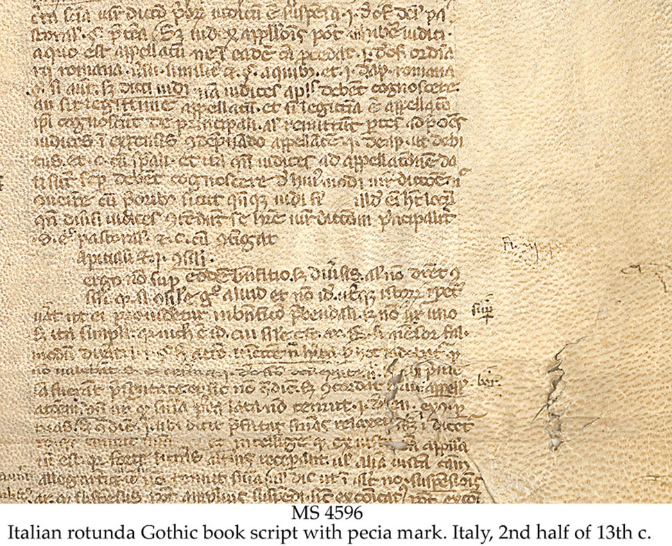
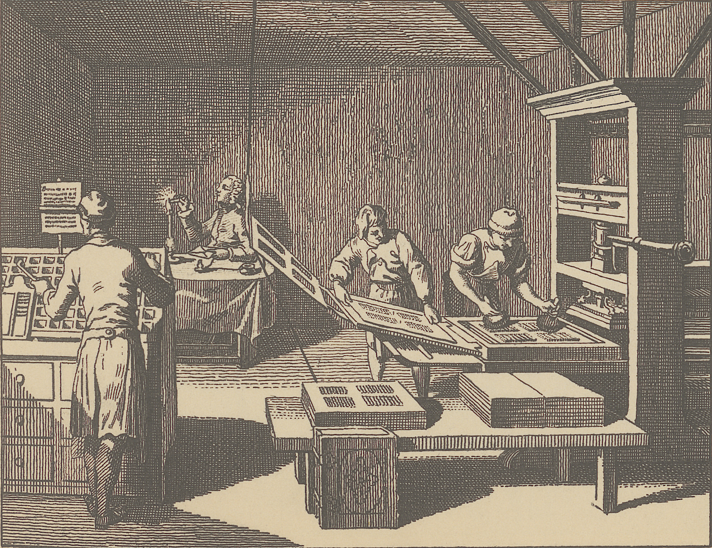
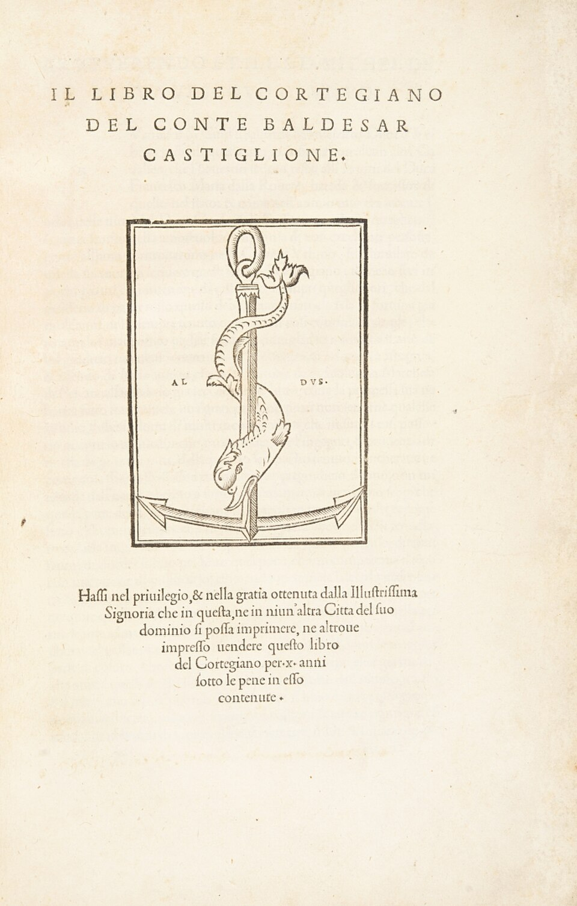

FRA3826 | EDN6001
10 septembre 2026
Dans son acception bibliographique, édition désigne l’ensemble des exemplaires imprimés à partir d’une même composition et destinés à être diffusés simultanément. Si le texte est modifié en cours de composition, on se trouve devant une variante éditoriale. Si la composition a été conservée, par ex. sous forme de plaques stéréotypiques, et que l’on imprime de nouveaux exemplaires, on parle d’impression ou de réimpression (le commerce de librairie désigne cependant aussi comme édition une réimpression des mêmes formes). (idem)
editio, editionis
Lat. editor, de edere, faire sortir, mettre dehors ; de e, et dere pour dare, donner. (Dictionnaire Littré)
variante éditoriale: modifications en cours de composition
impression ou réimpression: conservation de la composition et nouvelles impressions,
édition philologique

Pas de droits d’auteur, mécénat ou protecteur royal ou aristocratique
1450 Gutenberg et l’impression à caractères mobiles (Bible)


imprimeurs-humanistes
Aldo Manuzio, Venice, édition de poche in-8°
Sébastien Gryphe, Lyon, cercle d’écrivains et correcteurs (Rabelais)
purs éditeurs déjà à partir du XVe siècle, Antoine Vérard, Paris
séparation de l’espace typographique imprimeur et éditeur
Corneille, Pierre Horace, 1641, BNF, département Arsenal, RESERVE 4-BL-3515. Accès en ligne.
Corneille, Pierre Horace, 1641, BNF, département Arsenal, RESERVE 4-BL-3515. Accès en ligne.
Corneille, Pierre Horace, 1641, BNF, département Arsenal, RESERVE 4-BL-3515. Accès en ligne.
Le rôle de l’éditeur est fondamental et il faut consiérer, notamment à l’ère du numérique que
Ambassadeur culturel et intellectuel, intermédiaire essentiel entre l’auteur et le lecteur (Poirier et Genêt, p. 17)
Un commerçant ou un homme d’affaires ne devient éditeur qu’à partir du moment où il prend sur lui la (double) responsabilité matérielle et morale d’une œuvre. (Poirier et Genêt, p. 18)
Un commerçant ou un homme d’affaires ne devient éditeur qu’à partir du moment où il prend sur lui la (double) responsabilité matérielle et morale d’une œuvre. (Poirier et Genêt, p. 18)
Rôle: éditeur et entrepreneur
André Grasset entre-deux: homme de lettres et entrepreneur/marchand (Pierre Bordieu aussi)
médiateur indispensable entre une œuvre et un marché, dans l’espoir de répondre aux désirs, aux attentes et aux goûts du public.
En ce sens, le catalogue d’un éditeur, c’est-à-dire l’ensemble des auteurs et des titres que chapeaute la maison d’édition, se veut en quelque sorte le reflet de cette coexistence antagoniste entre des valeurs économiques et culturelles, en plus de témoigner du parcours intellectuel, de la personnalité et, bien sûr, des intérêts de l’éditeur, qu’ils soient artistiques, techniques, économiques ou littéraires.(Poirier et Genêt, p. 20)
Le «tri» est fait par l’éditeur ou un comité externe.
Directeur de collection | éditeur
(*) parfois des externes
Étapes souvent en parallèle
promotion de valeurs littéraires, à la légitimation d’une vision esthétique, d’un mouvement artistique ou d’un courant de pensée. […] il remplit par là un rôle social en assurant le développement et la pérennité de la vie intellectuelle, littéraire ou, plus largement, culturelle de la société. (Poirier et Genêt, p. 23)
Le numérique aide les éditeur.trice.s à se reapproprier de l’aspect commercial, publicitaire et divulgatoire, qui est delegué à des entreprises privés.